The existing website did not clearly communicate the platform value, making it harder for users to understand the offer and move forward.
Case study / Landing page redesign
Clarifying a wellness platform to support trust and conversion.
Honeybee Health is a landing page redesign for a subscription-based wellness platform. The work focused on making the offer easier to understand, improving visual hierarchy and creating a more conversion-oriented responsive experience.
UI/UX Design
Landing Page
Conversion
Responsive UI
WordPress
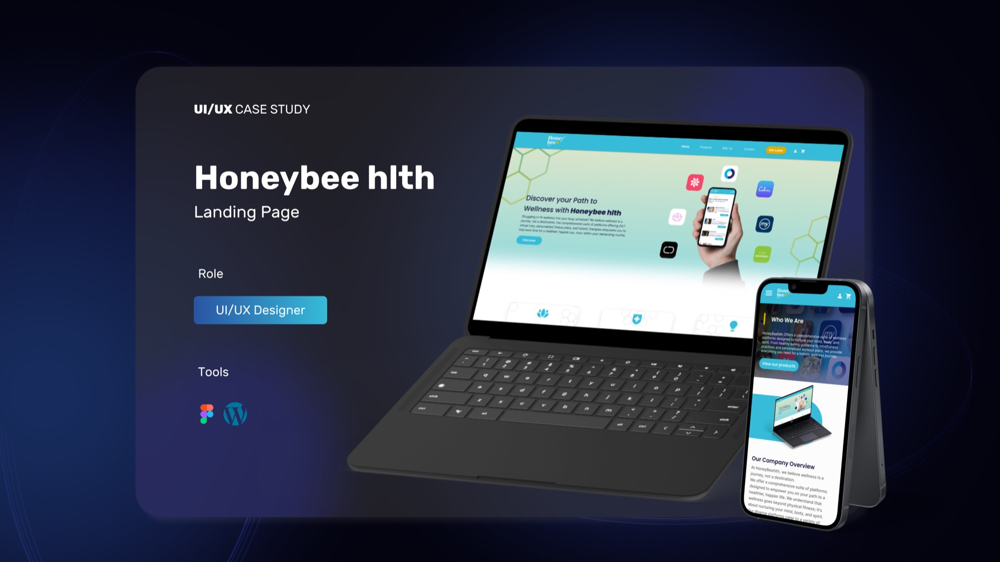
UI/UX Designer responsible for structure, visual direction, responsive layout and a clearer landing page experience.
Improve clarity, trust and conversion by making the value proposition, sections and calls to action easier to scan.
Story
A redesign shaped around clarity before persuasion.
The platform offered a bundle of wellness-related apps, but the landing page needed to make that proposition feel immediate, credible and easy to navigate.
I focused on reducing ambiguity: stronger section hierarchy, clearer messaging, more consistent branding and a responsive structure that could guide users from first impression to action.
01 / Research
Understanding the conversion problem behind the visual redesign.
The redesign started with desk research into adjacent subscription experiences and wellness platforms. The key opportunity was to make the offer feel distinctive while keeping the journey simple.
- Clarified the platform positioning and subscription model.
- Identified the need for stronger trust and value cues.
- Used research insights to guide content hierarchy and UI decisions.
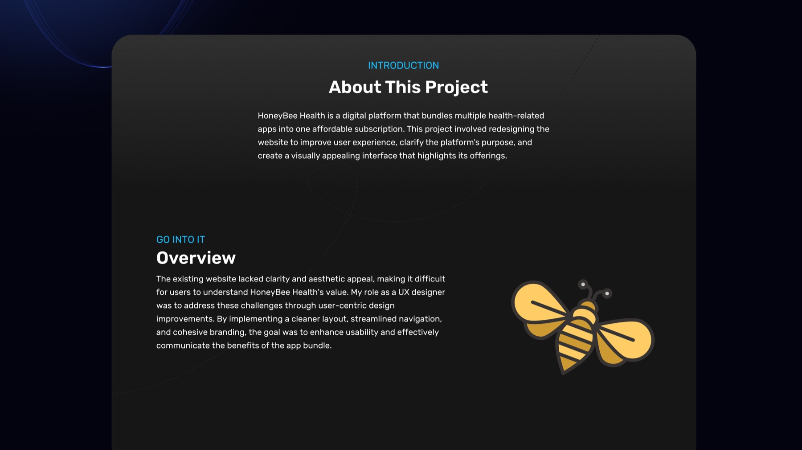
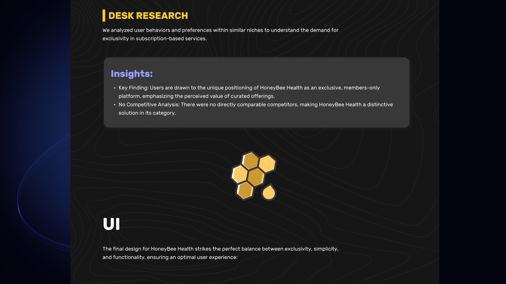
02 / Redesign Direction
From unclear landing page to guided product story.
The page was redesigned to make the wellness bundle easier to understand: clearer hero messaging, simplified navigation, stronger visual rhythm and responsive sections that support scanning.
- Created a clearer first impression and stronger product framing.
- Improved section hierarchy for faster comprehension.
- Balanced brand personality with usability and conversion needs.
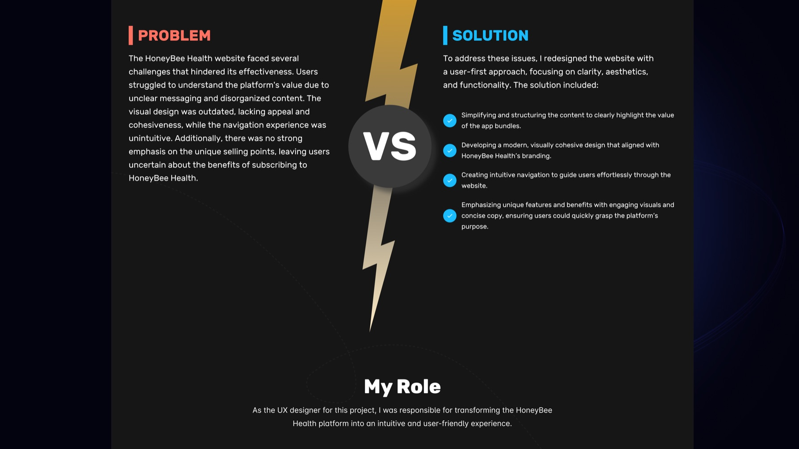
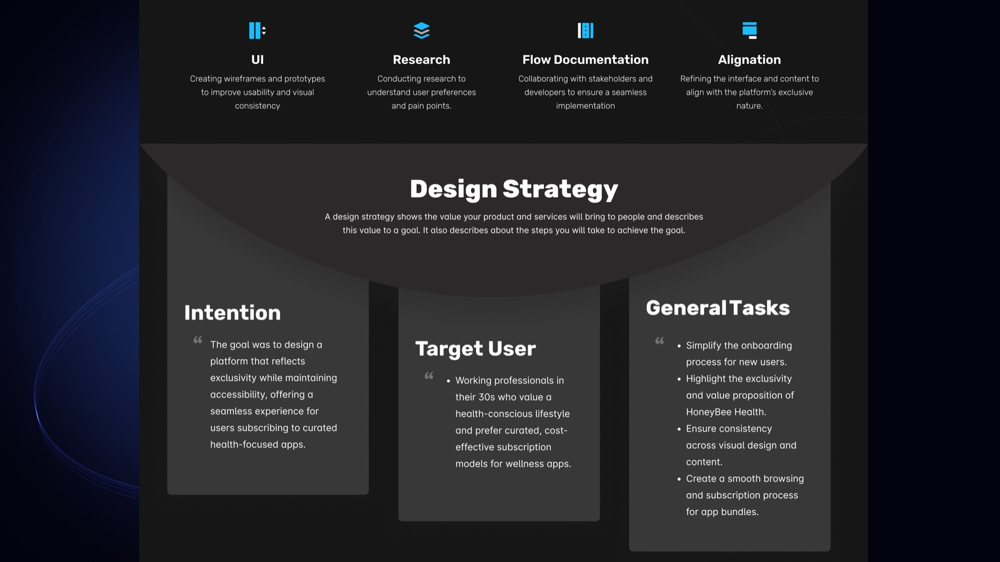
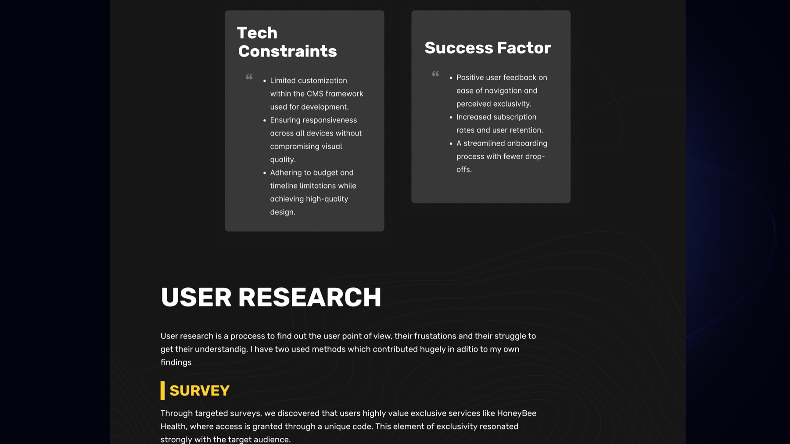
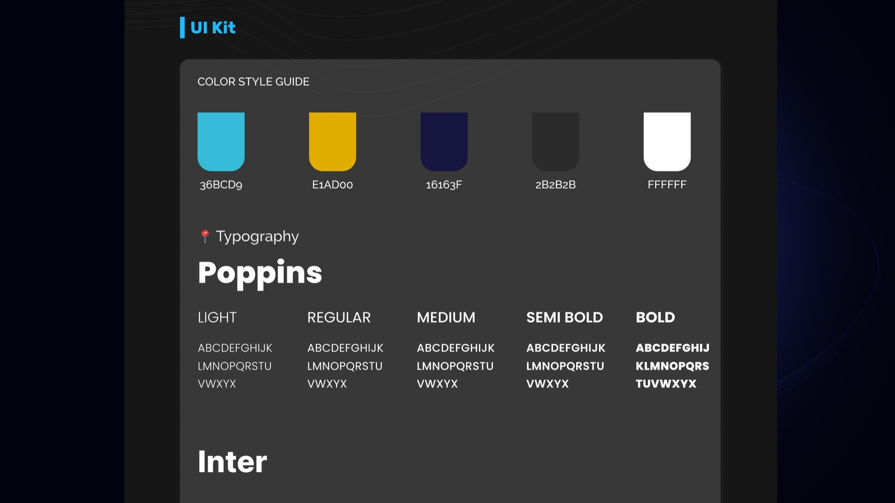
03 / Conversion Focus
Making the path to action easier to understand.
The final landing page uses a clearer narrative: who the platform is for, what users get, why it is valuable and where to act. The goal was not to add more content, but to make the right content easier to trust.
- Improved CTA visibility and section-to-section flow.
- Reduced cognitive load through clearer content grouping.
- Designed desktop and mobile views as one coherent experience.
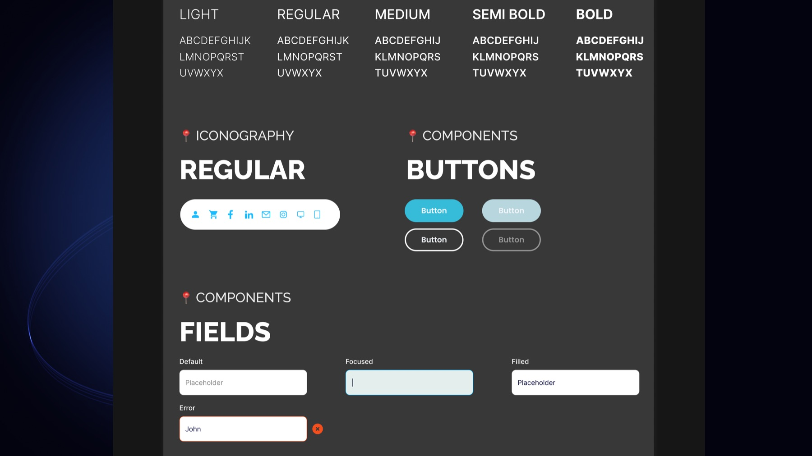
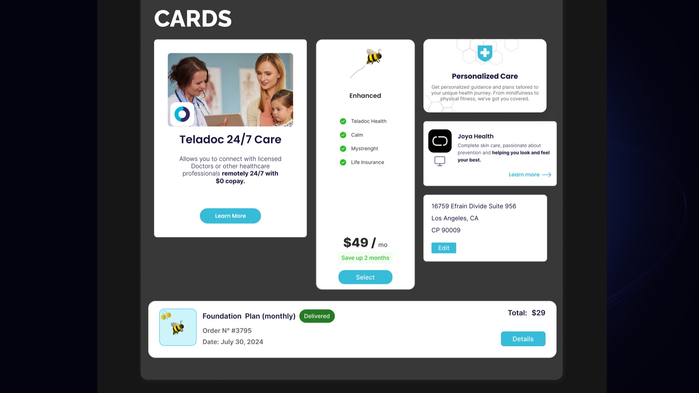
04 / Final Experience
A more polished, understandable and conversion-ready website.
The final concept gives Honeybee Health a clearer product story and a more confident visual presence, while keeping the experience accessible across desktop and mobile.
- More coherent landing page narrative.
- Stronger perceived trust and product clarity.
- Responsive design prepared for implementation in WordPress.
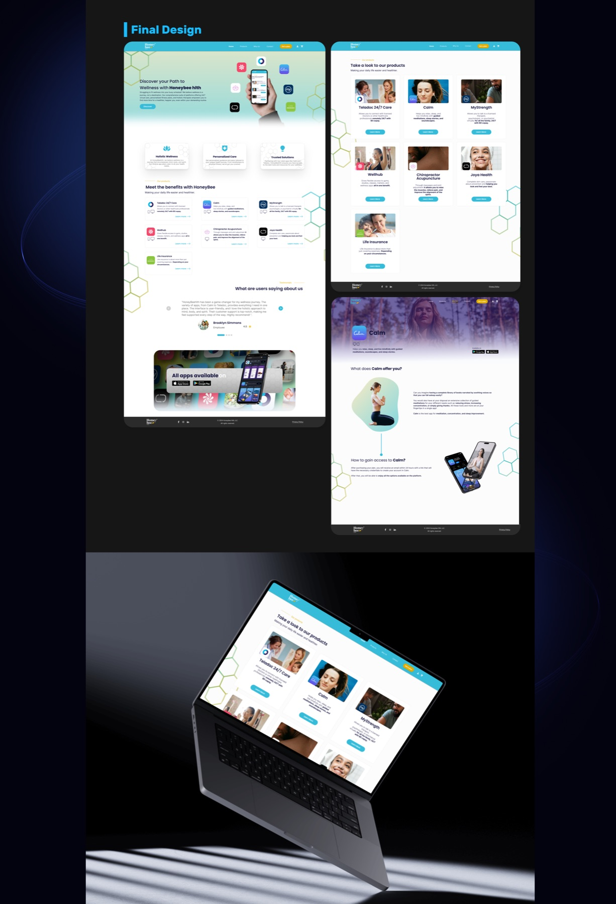
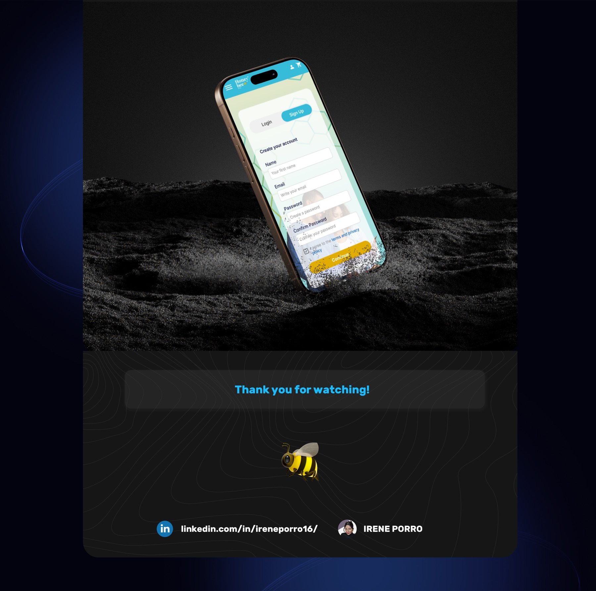